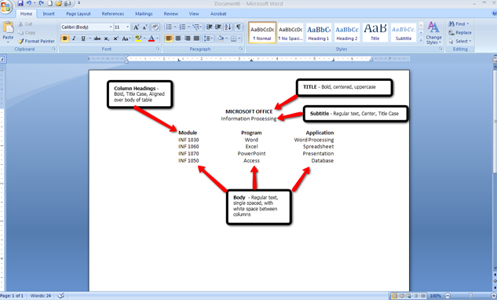
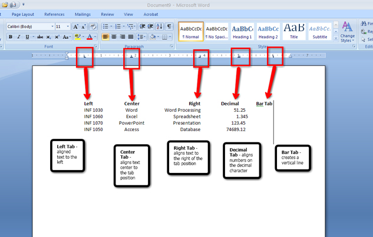
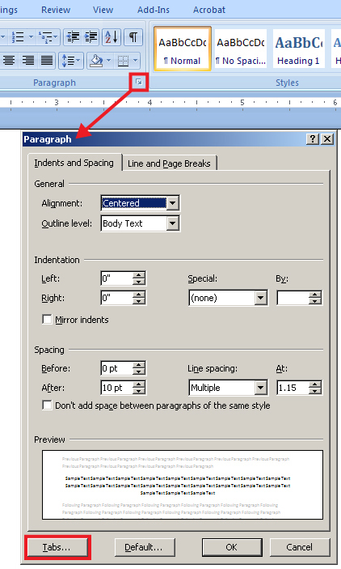
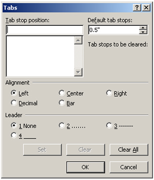
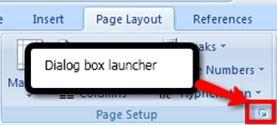
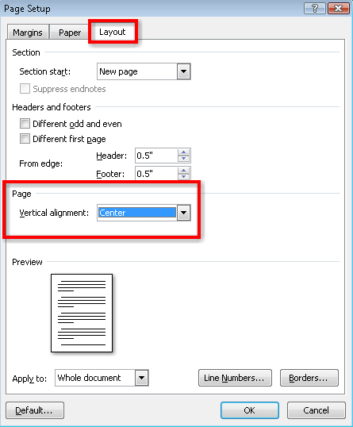
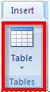
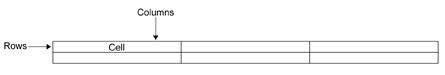
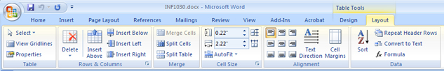
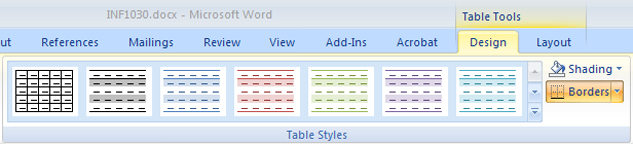

There are two ways you can create tables in Microsoft Word 2007. The first method involves setting and adjusting tabs; the second method uses the table feature.
In order to create a table, you need to know the basic parts included in a table and how they are structured. Study the following exemplar to learn the names of the table parts and see the proper format for a table.

Microsoft product screen shot(s) reprinted with permission from Microsoft Corporation.
You may notice that the table columns are aligned in a variety of ways. The first column is left-aligned, the middle column is centered, and the last column is right-aligned. Look at the diagram below and notice how different types of tabs are used to align text.

Microsoft product screen shot(s) reprinted with permission from Microsoft Corporation.
Go to the Instructional Video, and select “Setting Tabs on the Ruler.” This demonstration will allow you to discover how to set tabs on the ruler so that you can use this function to begin creating a table.

Microsoft product screen shot(s) reprinted with permission from Microsoft Corporation.

Microsoft product screen shot(s) reprinted with permission from Microsoft Corporation.
You can also access the Tab dialog box from the Paragraph group on the ribbon.
Now that you know what tabs are and how to set them, you’re ready to create a table. To create a simple table using tabs, go to the Instructional Videos and select “Setting Table Tabs with the Tab Dialog Box.”
It is customary to vertically centre a table (from top to bottom) on a page to give the page visual balance. This can quickly be done in the Page Setup group in the Page Layout tab, and by choosing the dialog box launcher.

Microsoft product screen shot(s) reprinted with permission from Microsoft Corporation.

Microsoft product screen shot(s) reprinted with permission from Microsoft Corporation.
Now you are familiar with the main parts of a table, what tabs are, how to set them, and also how to vertically centre your table on a page.

Microsoft product screen shot(s) reprinted with permission from Microsoft Corporation.
The table command in the Insert tab on the ribbon is another way to create tables. Insert a table by selecting the number of rows and columns you need. In a table, rows run horizontally (left to right), while columns run vertically (top to bottom), creating cells to hold your data. This is illustrated in the picture below.

Go to the Instructional Videos and select “Creating a Table Using Tabs.” This demonstration will show you how to create a table by clicking the Table button in the Insert tab.
When the table is selected, the Table Tools Design and Layout tabs appear for you to edit the table.
Use the Layout tab to add and delete rows and columns, merge or split cells, change the cell size or autofit your table to the text, and change the alignment of your text in the cell.

Microsoft product screen shot(s) reprinted with permission from Microsoft Corporation.
Now that you know how to set up a table, you can learn how to delete rows, columns, or cells in a table using the Table Tools Layout tab. To do so, go to the Instructional Videos and select “Deleting Cells, Rows, and Columns.”
In the Table Tools Design tab you can add shading, borders, and preformatted styles to your tables. Spend some time exploring these formatting features to see how they change the look of your table. More detailed instruction on how to use the Table Tools tabs is given in INF2050: Word Processing 2.

Microsoft product screen shot(s) reprinted with permission from Microsoft Corporation.
Go to the Instructional Videos and select “Formatting a Table.” This demonstration will teach you how to use the Shading command in the Table Tools Design tab to highlight information and draw attention to your table. Remember to format the title of the table as well as the column headings in bold.
Once your table is formatted, you should centre the table horizontally and vertically on the page. Use the left, center, or right alignment buttons in the Home tab to change the alignment of your table on your page.
HINT: Use Ctrl + L to align left; Ctrl + R to align right; Ctrl + E to align centre.